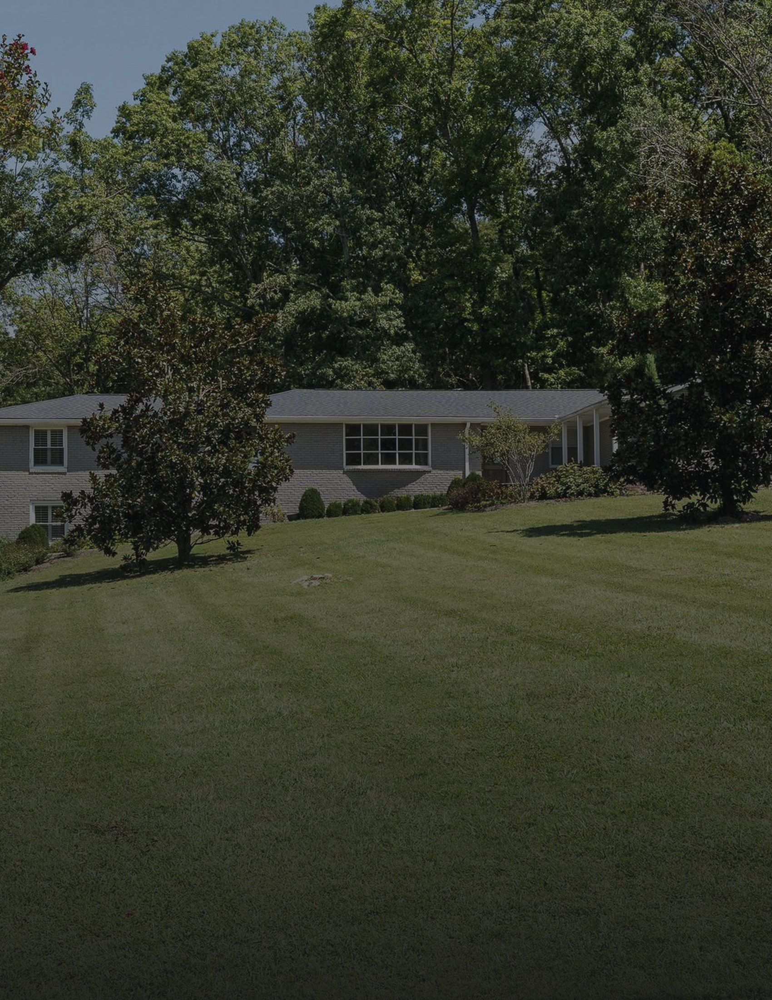
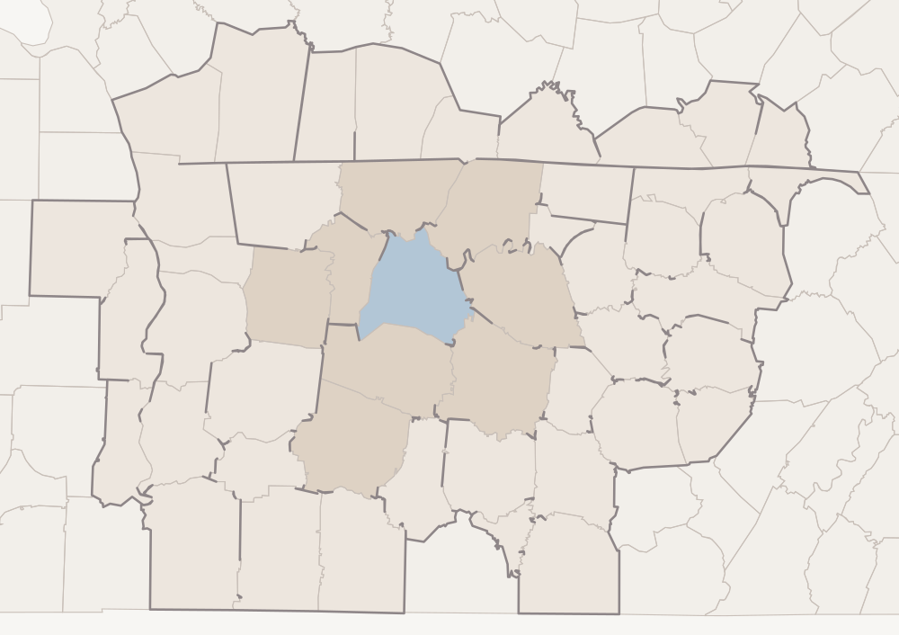
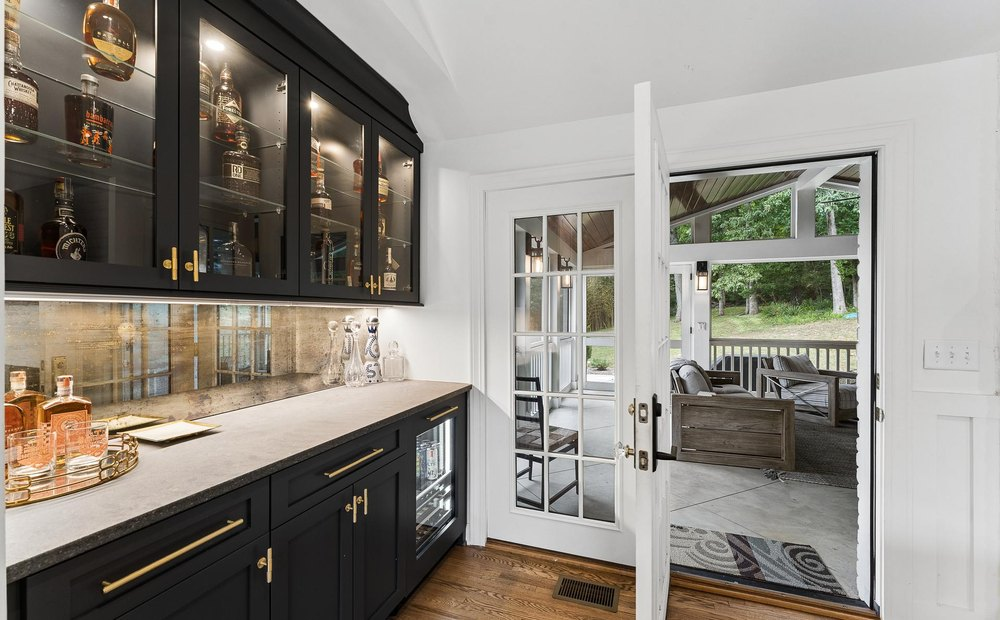

805 Cammack Ct · Digital Billboard Strategy
A quiet acre on the west side, shown to the city all around it.
Property
805 Cammack Court, Nashville, Tennessee 37205 · West Meade Hills
List Price
$1,799,000
The Residence
Approximately 3,800 square feet · 5 bedrooms · 4.5 bathrooms
The Setting
1.15 acres at the end of a cul-de-sac · mature landscape
The House
Built 1963 · reimagined in 2022 by a respected local builder
Market
Nashville · forty-nine counties · Davidson County at the centre
Campaign Window
Thirty days, continuous
Prepared for the owner · The plan for the thirty days ahead
The Market
Forty-nine counties on paper, one city in practice.
805 Cammack Court stands in West Meade Hills, on the west side of Nashville and inside Davidson County. Advertising of this kind is bought by market rather than by address, and the market this property sits in is Nashville — forty-nine counties across two states, reaching from the Kentucky line above Hopkinsville down towards the Alabama border.
That is the market. It is not, for this house, the plan. A renovated house on an acre in an established west-side neighbourhood is bought by someone who already knows the neighbourhood — so the weight of this campaign sits on Davidson County and the counties that commute into it, shaded darker on the map below. The rest of the market carries a lighter, steady presence rather than none at all.

805 Cammack Ct
Downtown Nashville
Mount Juliet
Hendersonville
Brentwood
Franklin
Murfreesboro
Dickson
Clarksville
Columbia
Davidson County
The Commuter Ring
Rest of the Market
Outside the Market
Davidson County was established from the property’s own coordinates rather than inferred from the postcode. The federal address geocoder, the same federal service run in reverse on those coordinates, and a point-in-polygon test against all two hundred and fifteen county boundaries in Tennessee and Kentucky each return Davidson, county 47037, and nothing else. The forty-nine-county roster was taken from a published county-by-market schedule, checked against a second independent published reference that returned the identical list, and every name on it matched against the federal boundary file — forty-nine of forty-nine, with none unaccounted for. We describe this market by its county count rather than by a national ranking: published rankings disagree with one another and move from year to year, so the honest measure of reach is the ground it covers.
The Forty-Nine Counties49
Davidson
Bedford
Benton
Cannon
Cheatham
Clay
Coffee
DeKalb
Decatur
Dickson
Franklin
Giles
Henry
Hickman
Houston
Humphreys
Jackson
Lawrence
Lewis
Macon
Marshall
Maury
Montgomery
Moore
Overton
Perry
Pickett
Putnam
Robertson
Rutherford
Smith
Stewart
Sumner
Trousdale
Van Buren
Warren
Wayne
White
Williamson
Wilson
Allen, Ky.
Christian, Ky.
Clinton, Ky.
Cumberland, Ky.
Logan, Ky.
Monroe, Ky.
Simpson, Ky.
Todd, Ky.
Trigg, Ky.
Forty in Tennessee · nine in Kentucky, set in grey
Why The Weight Sits Close To Home
A house at this price in West Meade is not, in the main, sold to someone seeing a roadside screen four hundred miles away. It is sold to a household already inside this city — growing out of a smaller place in Sylvan Park or Bellevue, moving over from Green Hills, coming back in from Williamson County for the shorter drive and the bigger garden. Those people pass through Davidson County every day. The campaign is built to be in front of them repeatedly, in the ordinary movement of the week, rather than thinly spread across two states.
The Argument
The buyer for this house already drives these roads.
This is an unusually easy house to argue for, because almost nothing about it needs explaining to someone who lives here. Bellevue is two and a half miles away in a straight line, Belle Meade three, Green Hills five, downtown eight. A west-side buyer already knows what an acre at the end of a Cammack Court cul-de-sac is worth, and what a 1963 house taken back to the studs in 2022 actually means. The advertising does not have to travel to find that person. It has to be present, often, where they already are.
01
Local, deliberately
The emphasis sits on Davidson County and the ring that commutes into it. A wider footprint would look more impressive written down and do less. We would rather be seen five times by the right household in Bellevue than once by a stranger on the Cumberland Plateau.
02
The lot is the headline, not the square footage
Nashville has plenty of renovated houses. An acre and a sixth of mature, private ground at the closed end of a west-side street is the scarce part, and it photographs from the air in a way a driver understands in two seconds. That is what the screens lead with.
03
One idea per screen
A driver has a few seconds. Each frame carries the house, the price, the address and nothing else — no feature lists, no agent portrait, no logos competing with the property.
04
One address, everywhere
Every screen ends at the same short web address as the rest of the campaign, so that a glance from a car can be recovered from a phone that evening.
The Property, In Figures
3,800
Square Feet, Approx.
5 · 4.5
Bedrooms · Bathrooms
1.15
Acres, End Of Cul-De-Sac
1963 · 2022
Built · Reimagined
8.4 mi
To Downtown, Straight Line
The Targeting
Set by geography, never by billboard.
These screens do not work the way billboards used to. We do not take one sign on one road for a month. They are bought programmatically: we tell the exchange which parts of the market to serve the property into, and it places the advertisement on whatever screens are free there while the campaign runs. There is no list of board addresses in this document, and there will not be one. What we choose is the geography.
In practice that means roadside and public digital screens across the forty-nine counties on the previous page, weighted heavily towards the five areas below.
AreaTargeted GeographyWhy It Is Included
01
West Nashville · West Meade, Belle Meade, Bellevue, Green Hills, Sylvan Park, Hillwood
Highest priority
The property’s own side of the city, and the shortest distance between an advertisement and a viewing. These households already know what Cammack Court is, already drive Highway 70 and Harding Pike, and are the most likely to move within a few miles rather than across the state.
02
The rest of Davidson County · downtown, East Nashville, 12 South, Berry Hill, Donelson
Highest priority
The county the property sits in. A household in a tight infill house downtown that now wants a garden and a cul-de-sac is one of the clearest buyer profiles this listing has, and they are eight miles away.
03
Williamson County · Brentwood, Franklin, Nolensville
High priority
The wealthiest ground in the market and a genuine two-way street: households trading out to the county, and households coming back in towards the city for a shorter commute without giving up land. Brentwood is eleven miles from the property in a straight line, Franklin fourteen.
04
The commuter ring · Sumner, Wilson, Rutherford, Cheatham, Robertson, Dickson, Maury
Moderate priority
The counties whose residents drive into Davidson to work. Presence here is about being seen on the way in and on the way home, by people for whom this city is already a daily destination.
05
The balance of the forty-nine, including the nine Kentucky counties
Light, steady presence
The plateau to the east, the river counties to the west, the Kentucky line to the north. A small share of delivery, so that the whole market is covered for the full thirty days rather than switched off.
Where The Emphasis Sits
Areas 01 and 02 together take the clear majority of delivery: one is the property’s own side of town, the other is the county it sits in. Williamson takes the next share, the commuter ring a smaller one, and the outer counties run at a light steady level so that nowhere in the market is dark.
We would rather run across the market for the full thirty days at a measured weight than crowd two weeks and then disappear. One consequence of buying this way is worth saying plainly: we cannot promise a photograph of your house on a named sign at a named junction. What we can say is which parts of Tennessee and Kentucky saw it, and how often, once the month is over.

The 2022 interior the advertising leads with
In A Straight Line
Bellevue 2.6 mi · Belle Meade 3.1 mi · Green Hills 5.2 mi · Vanderbilt 6.7 mi · Downtown Nashville 8.4 mi · Brentwood 11.2 mi · Nashville International Airport 13.8 mi · Franklin 13.9 mi · Hendersonville 22.1 mi · Murfreesboro 32.5 mi — from the property’s coordinates; straight-line, not driving times.
What Happens Next
The month ahead, in order.
The market, the areas inside it and where the emphasis sits are decided; the reasoning is on the pages before this one. What follows is the sequence. The steps in black are settled and ours to run. The two in grey are figures that do not exist yet, left blank rather than estimated.
StepStageWhat It Means
01
Artwork
The screen frames are built from the listing photography — the aerial over the lot, the house across the lawn, the 2022 interior. You will see them and approve them before anything runs.
02
Geography Loaded
The five areas on the previous page are entered as the targeting, with the weighting set so West Nashville and the rest of Davidson carry the majority of delivery.
03
Launch
The property begins serving to digital screens across the targeted areas. From the first day it runs continuously rather than in bursts.
04
Through The Month
Delivery is watched across the thirty days and the weighting between areas adjusted if one is running ahead of the others. The areas themselves do not change.
05
Impressions
To be confirmed. We will state a figure only once an operator has committed to one in writing, and it will then be the number we are held to.
06
Performance
Nothing measured. The campaign has not begun, so there is nothing here to read yet.
07
At The Close
Once the thirty days are run, a report: which parts of Tennessee and Kentucky saw the property, and how often — whatever the operators are able to verify.
Two Things That Will Never Appear
No individual board and no screen count, at any stage. These are not applicable to a campaign bought this way: screens are served programmatically across the targeted areas, and which ones carry the advertisement varies hour by hour with what the exchange has available. We cannot promise a photograph of your house on a named sign; we can tell you the geography it ran in.
The Property, Online
Where every screen resolves.
The Rest Of The Campaign
Online advertising and a direct mail campaign run into the same part of Tennessee across the same thirty days; each is set out in its own document.
Your Agent
Alex Brandau IV
Aperture Global Real Estate
+1 615 335 5600
Alex.Brandau@ApertureGlobal.com